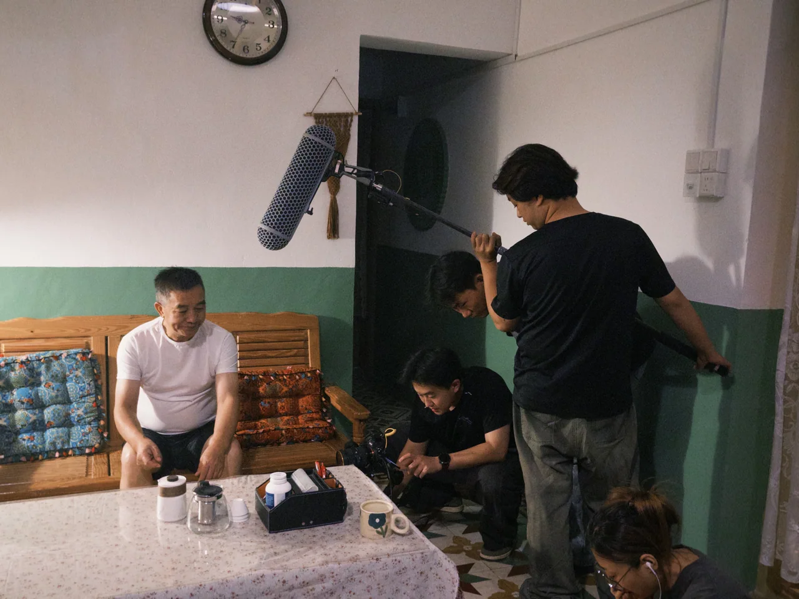
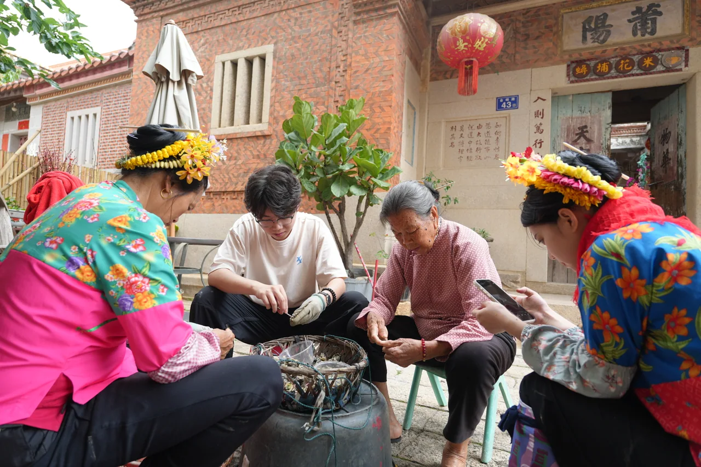
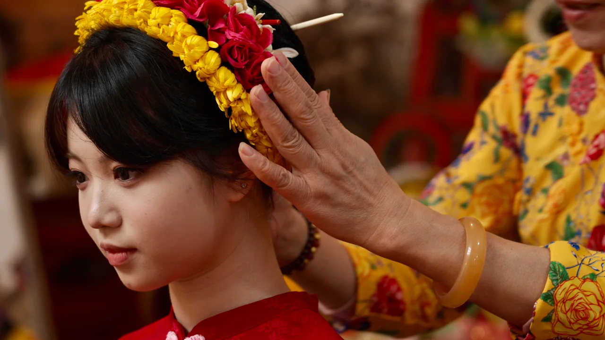
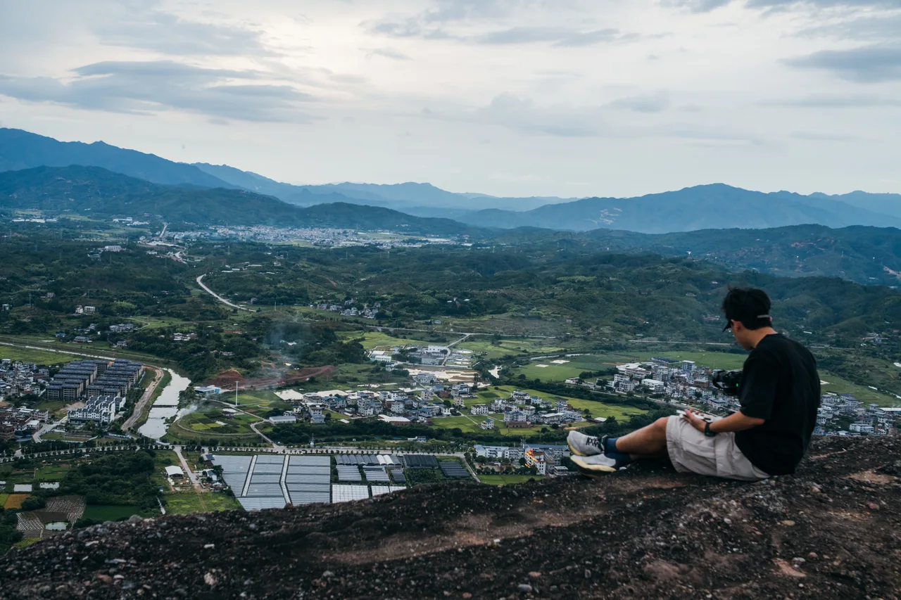

创意研究与叙事开发
以大语言模型辅助主题研究、脚本推演与文案迭代，衔接采访素材整理、信息归纳和字幕制作，为不同传播场景形成清晰的内容方案。
让故事，拥有再次被看见的可能。
我们做什么？
我们是一支专注高校新媒体与地方文化传播的青年创作团队，提供从主题策划、脚本开发到拍摄、剪辑与成片交付的完整视听制作。
面向高校，我们关注办学特色、校园生活与青年成长；走进地方，我们记录真实的人物、风物与文化现场。
我们从具体的受众、使用场景和传播目标出发，统筹创意、美术、摄影与后期，让人物和细节成为故事的线索，把校园与地方的特色，拍成有辨识度、有传播力的代表作品。
高校与地方两类核心服务场景
策划至交付完整视听制作协作
实拍 × AI内容与技术共同探索
精选案例
高校宣传、青年叙事与地方文化。精选工作室作品与主创参与制作的项目。
校园空间、人物与地方现场的摄影选辑。
服务内容
支持单次制作与长期内容合作。
AI 创作
将大语言模型、生成式视觉与专业后期协同使用，探索适合校园与地方文化的内容形式。
以大语言模型辅助主题研究、脚本推演与文案迭代，衔接采访素材整理、信息归纳和字幕制作，为不同传播场景形成清晰的内容方案。
结合文本、图像与视频参考，开展场景生成、镜头预演及画面编辑。生成素材与实拍镜头共同进入剪辑、声音和调色流程，探索连贯的视听表达。
未来将围绕校园成长、青年实践与地方文化，逐步推进人物及场景设定、连续镜头和创意样片开发，探索适合系列传播的主题微短剧与联合制作。
制作与协作
从脚本、拍摄到剪辑，主创持续参与。
我们也可按您的要求整理拍摄素材，供后续宣传使用。





专注高校新媒体与地方文化影像，统筹项目的创意开发、导演执行与后期制作。围绕人物、空间和具体传播任务建立叙事方向，协调美术、摄影与商务分工，将前期构想落实为可执行的制作方案，并把握剪辑节奏、声音、调色与最终交付。
以画面风格与视觉统筹为主要创作方向，围绕项目主题建立色彩、场景与美术表达。与导演、摄影共同梳理视觉参考和镜头气质，协调前期构想、现场呈现与后期视觉的一致性，让人物、空间和细节共同服务于作品的叙事。
负责项目监制，参与文本审阅、创意讨论与选角，统筹前期筹备、制作推进及关键节点沟通，协同导演、摄影与美术把握内容质量和最终成片效果。同时负责商务拓展与合作对接，面向高校、地方机构及内容合作伙伴建立合作关系，衔接项目需求、预算、排期与交付，推动合作从意向沟通落实到制作完成。
专注于摄影与视觉影像创作，具备现场拍摄及后期制作能力，能够围绕人物、活动与品牌需求配合导演进行视觉表达与影像叙事。具备摄影项目策划、现场执行及团队统筹经验，致力于通过专业的影像创作提升作品的视觉质感与传播价值。
参与人物、活动与校园场景的影像采集，配合导演和摄影完成机位协作、设备准备与现场执行。重视构图、光线与人物状态的观察，在拍摄和素材整理之间保持清晰衔接，协同团队完成从现场记录到成片制作的各项任务。
关于工作室
让生活，再显影
让经过，被看见。
我们希望把这种可能，带入校园与地方的内容表达。让办学特色有具体的人物和场景，让文化传承不止停留在概念，让青年经验成为能够被理解的故事。
工作室以高校新媒体内容为主营，以地方文化传播为重要方向，提供从主题策划、摄制到版本交付的一体化协作，并持续探索 AI 创作与主题微短剧。
主创实践涵盖中英文招生宣传、校园短片、地方文化纪录与文旅传播。相关参与作品累计传播达百万级，影像作品获福建省大学生影像大赛一等奖、二等奖等成果。